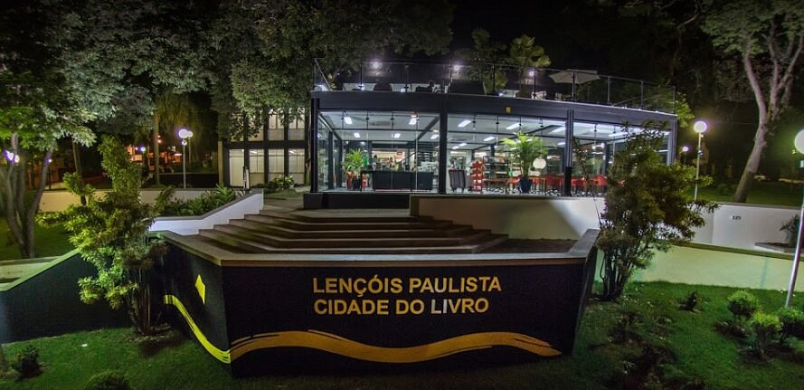
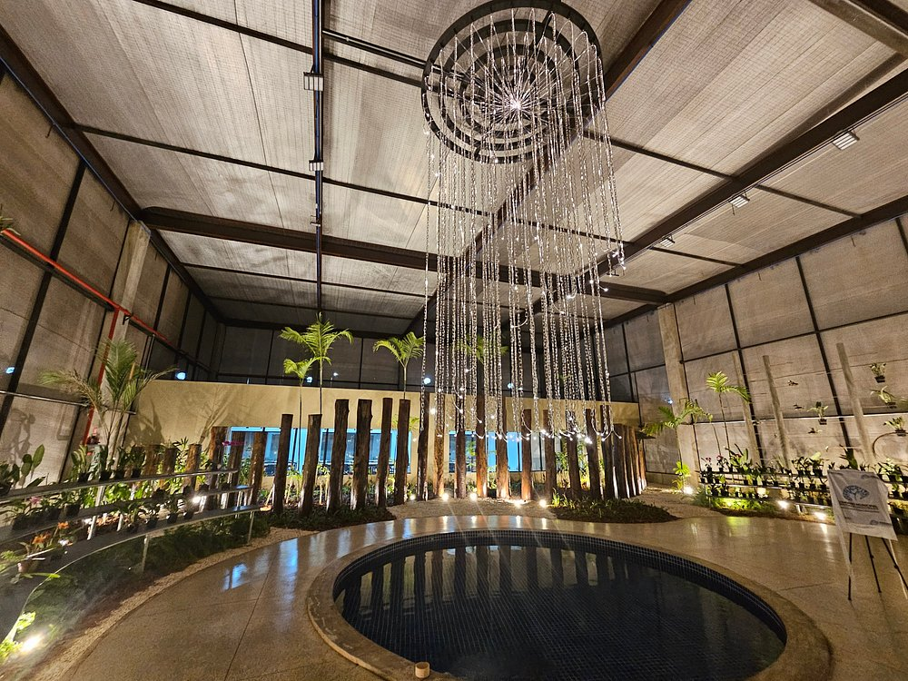
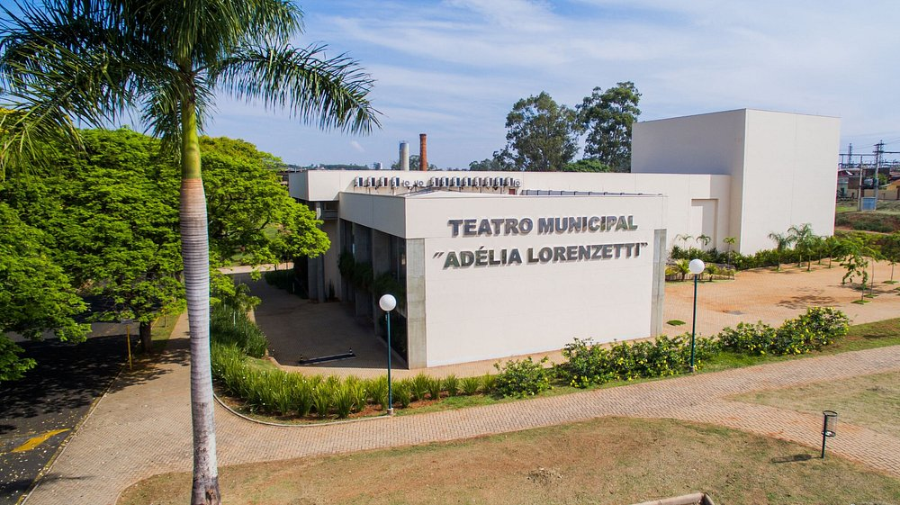
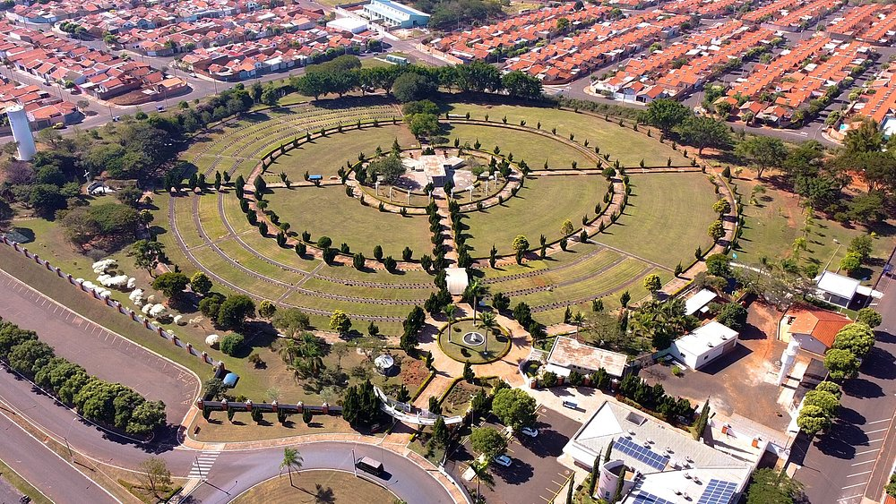
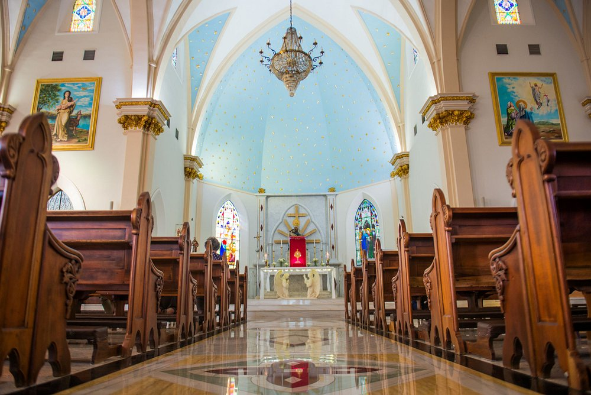
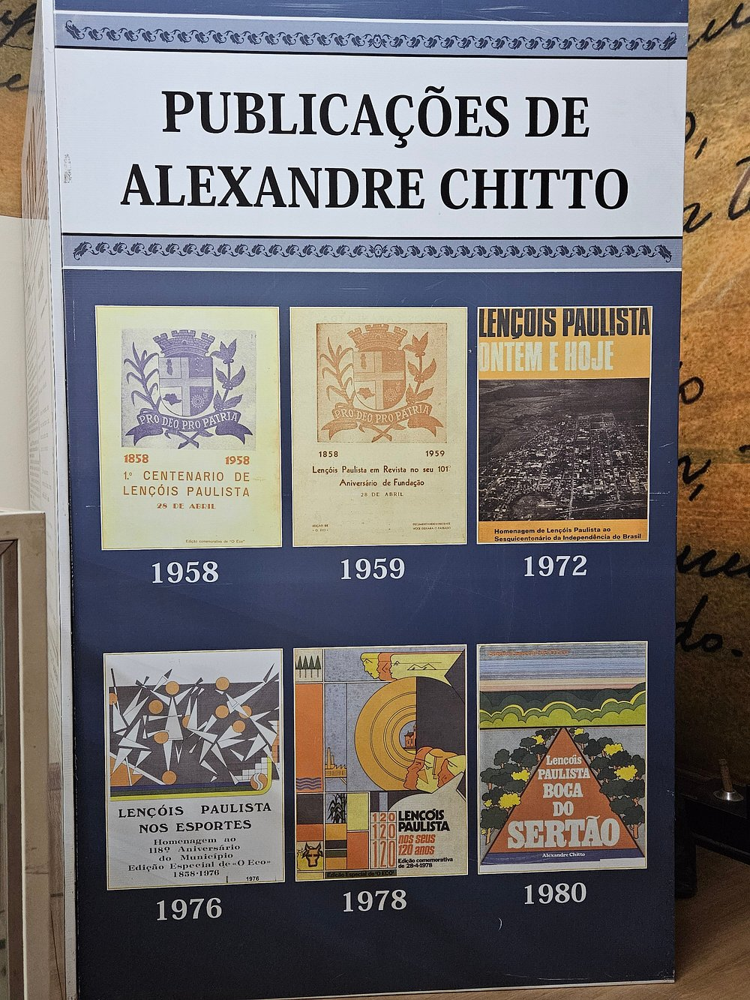

A Biblioteca Municipal Origenes Lessa é um espaço de cultura e conhecimento, com uma vasta coleção de livros, jornais e revistas.

O Orquidário Municipal Welthes Repik é um espaço dedicado à preservação e divulgação das espécies de orquídeas nativas da região.

O Teatro Municipal Adélia Lorenzetti é um espaço cultural importante da cidade, com apresentações de teatro, dança e música.

O Cemitério Paraíso da Colina é um espaço de repouso e lembrança, com uma arquitetura elegante e paisagens naturais.

O Santuário Nossa Senhora da Piedade é um local de devoção e paz, com uma arquitetura inspiradora e um ambiente sagrado.

O Museu Municipal Alexandre Chitto é um espaço cultural que abriga uma coleção de objetos históricos e artísticos da região.